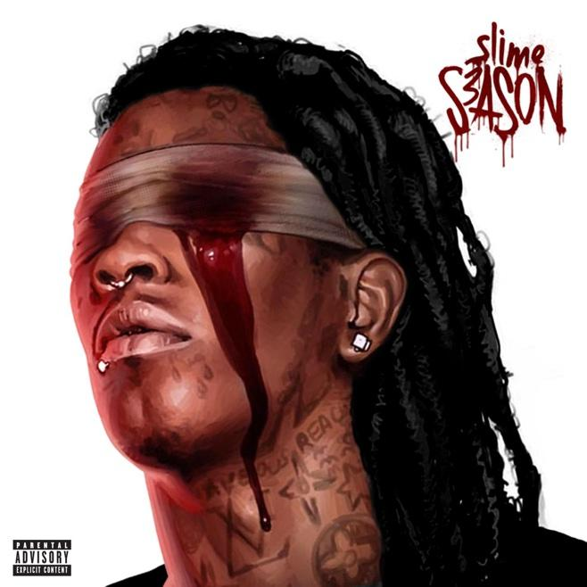
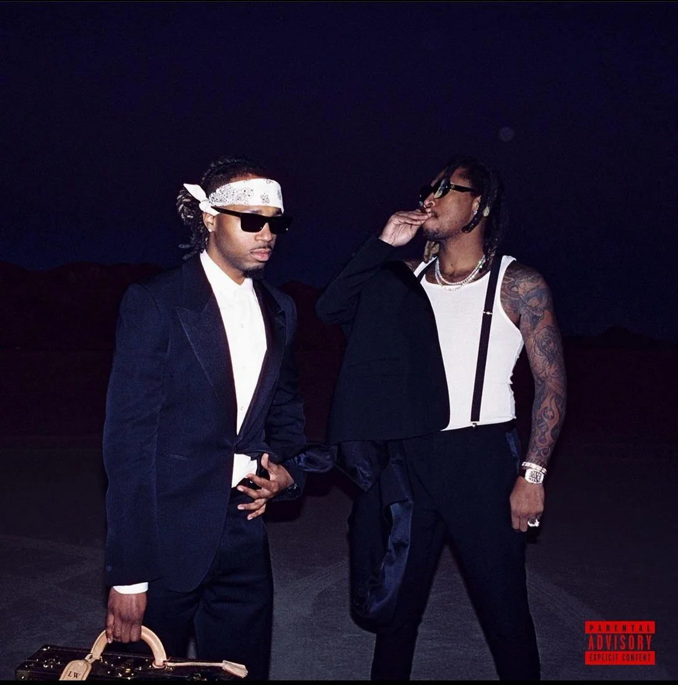
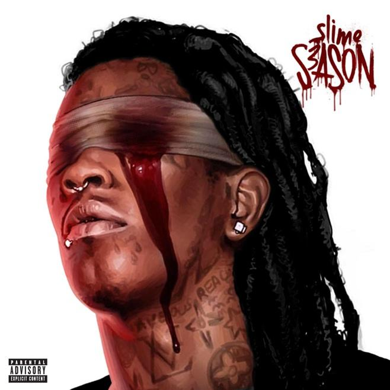
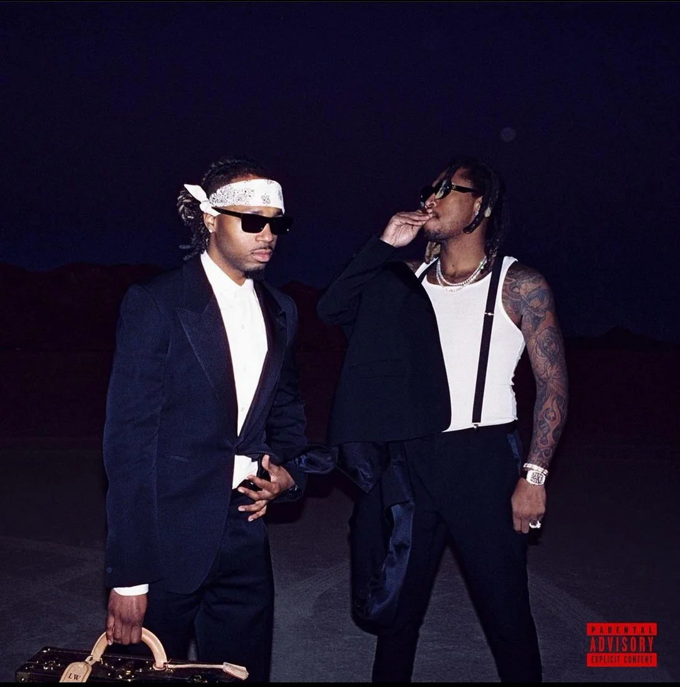
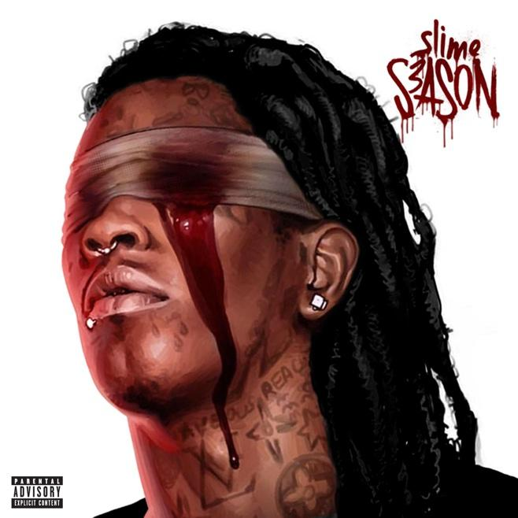
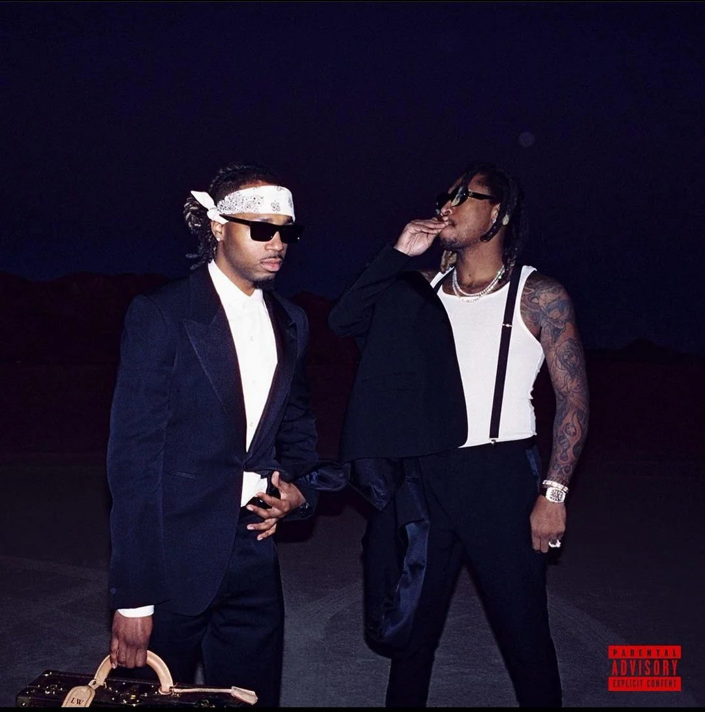

Главная | Детали альбома (пока не нажимать) | Статистика


WE DON'T TRUST YOU
Future & Metro Boomin
«We Don't Trust You» – это совместный рэп-альбом Future и Metro Boomin, выпущенный 22 марта 2024 года,
который стал первой частью дилогии из двух альбомов, выпущенных с интервалом в несколько недель.
Альбом вызвал широкий резонанс и спровоцировал масштабную драму в рэп-индустрии.
HEROES & VILLAINS
Metro Boomin
«Heroes & Villains» — это концептуальный альбом американского рэп-продюсера Metro Boomin, выпущенный 2 декабря 2022 года,
который исследует темы добра и зла через психоделический трэп.
Альбом получил широкое признание критиков и дебютировал на первом месте в чарте Billboard 200.
Monster
Future
«Monster» — это тринадцатый микстейп американского рэпера Future, выпущенный 28 октября 2014 года лейблом Freebandz Entertainment.
Микстейп считается частью «трилогии микстейпов альбомного качества», наряду с «Beast Mode» и «56 Nights», выпущенных Future после его второго студийного альбома Honest.
Исполнительным продюсером микстейпа выступил Metro Boomin.
Slime Season 3
Young Thug
«Slime Season 3» — это третий коммерческий микстейп американского рэпера Young Thug.
Он был выпущен 25 марта 2016 года лейблами 300 Entertainment и Atlantic Records.
Микстейп является третьей частью серии Slime Season.